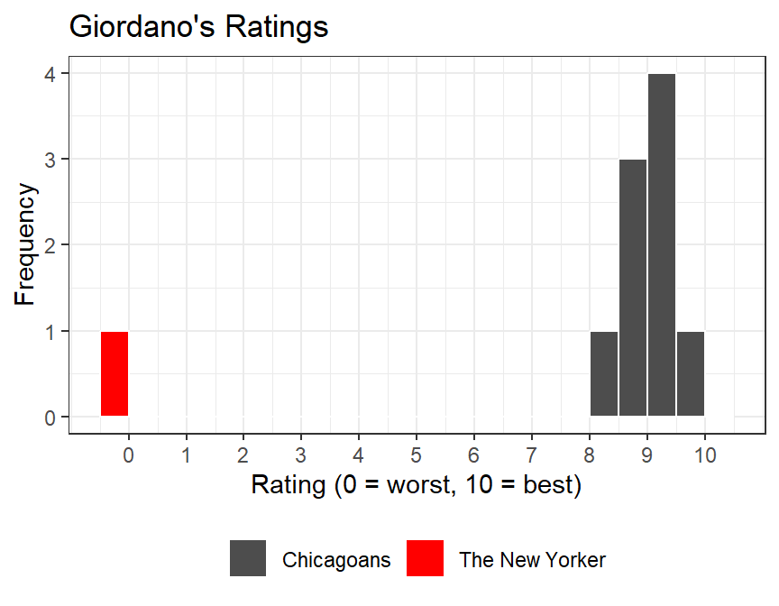
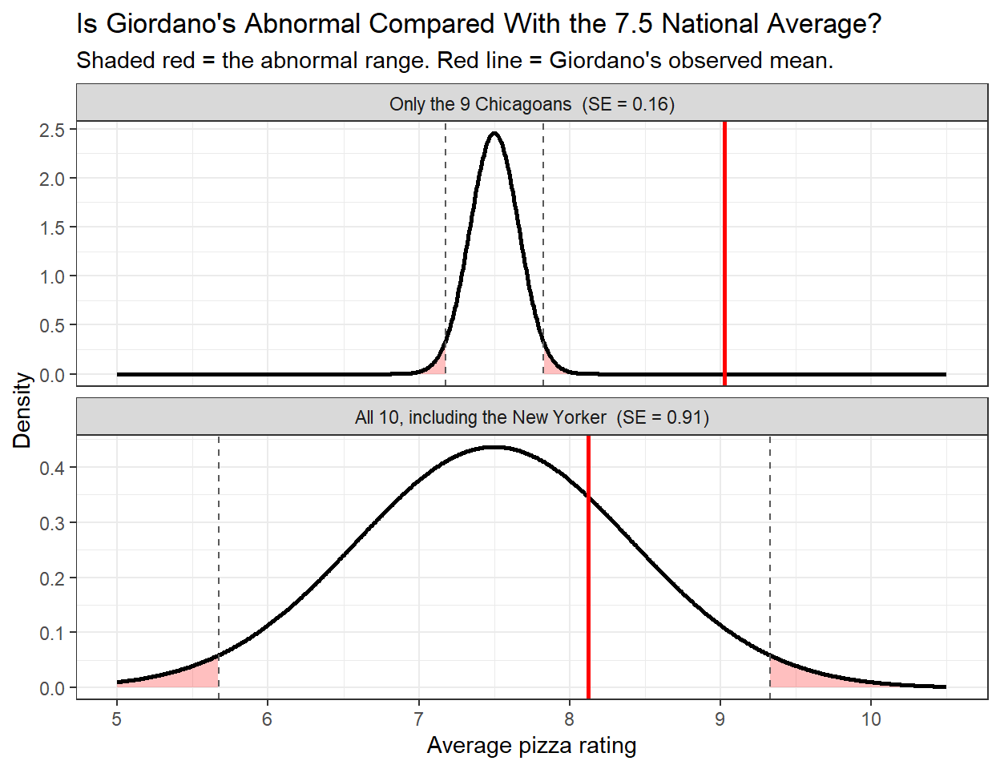
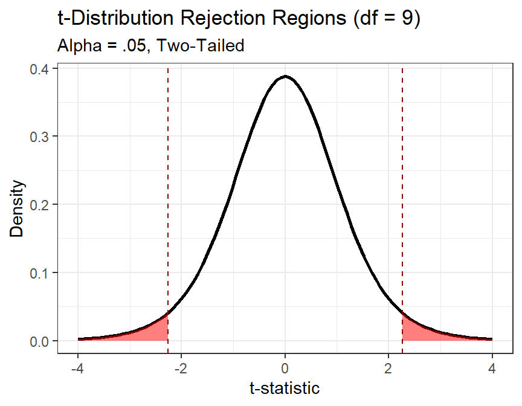
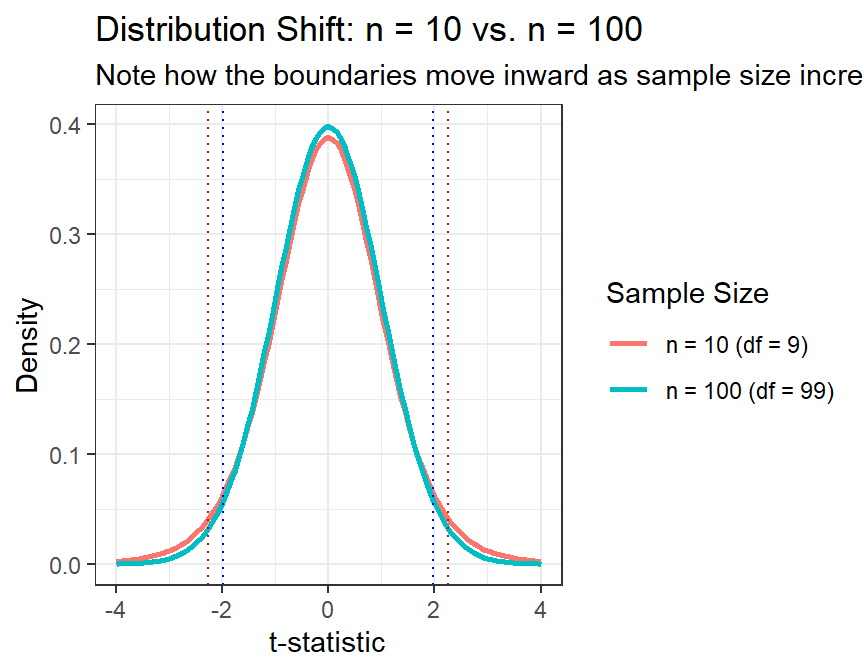
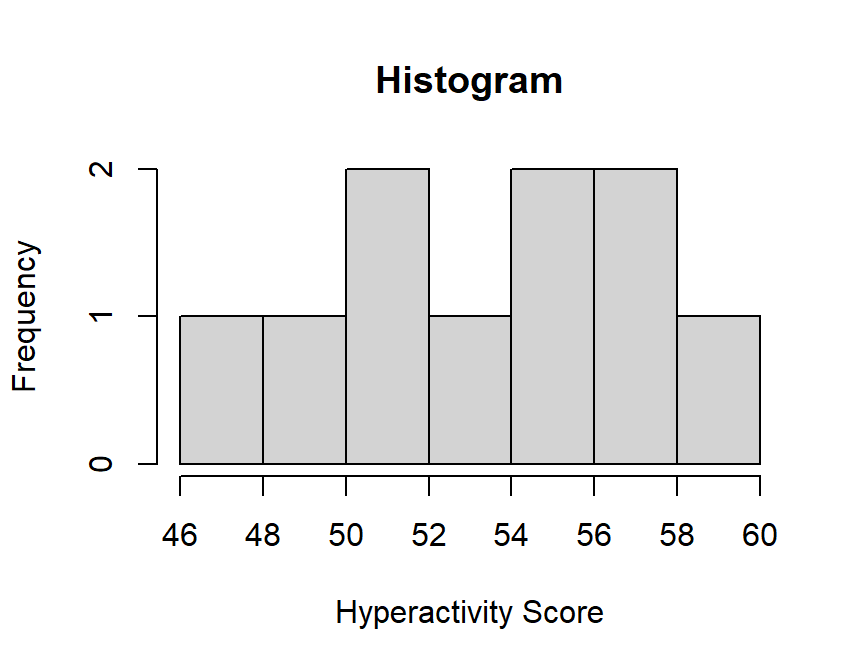

set.seed(242)
Chicagoan <- rnorm(9, mean = 9, sd = .5)
NewYorker <- 0
Full.Data <- c(Chicagoan, NewYorker)6 One Sample t-Test
6.1 Experimental Logic
In psychology, we test claims by making comparisons:
Sometimes we compare a group to a known value: Do more frequent train rides increase CTA liking above the neutral baseline of 3? \(\rightarrow\) one-sample t-test.
Sometimes we compare two groups: Does CTA liking differ between people in quiet vs. regular subway cars? \(\rightarrow\) independent samples t-test.
Finally, we also compare people to themselves groups: Do you like to ride the CTA more in the summer or winter? \(\rightarrow\) paired samples t-test.
Either way, the logic is the same: are the differences we observe larger than we’d expect from random sampling noise alone?
6.1.1 Logic behind Hypothesis testing: The Blind Men and the Elephant
A group of blind men were traveling together when they encountered a strange object blocking their path. Each man touched a different part of the object and described what he thought it was, based entirely on his limited experience.
One man, feeling the elephant’s trunk, exclaimed, “This must be a thick branch of a tree!” Another, grasping the elephant’s leg, disagreed: “No, it’s clearly a pillar!” A third, holding the elephant’s ear, insisted, “You’re both wrong—it’s obviously a fan!”
Each man was convinced he was right, believing his own perspective represented the full truth. Their disagreement quickly escalated into an argument, with each trying to prove the others wrong. Eventually, the elephant, thoroughly unimpressed, grew irritated by their foolishness and tossed them all into a nearby river for disturbing its peace.
— A paraphrased ancient Indian parable
This story is a useful reminder when trying to understand the world, and especially when building theories from data. Our perspectives are almost always limited, shaped by where we stand, what we’ve experienced, and what we want to believe. Just as each blind man grasped only one part of the elephant, our samples and hypotheses capture only small pieces of a much larger reality.
Statistical testing exists precisely because of this limitation: it gives us a disciplined way to ask whether our small, noisy glimpses are consistent with the bigger picture, or whether we might just be arguing over trunks, legs, and ears.
6.1.2 Experimental Example
- Step 1: Begin with a theory.
- Step 2: Develop a hypothesis derived logically from your theory.
- Step 3: Design a method to test your hypothesis, including measurements, sample recruitment, and analytical tools.
- Step 4: Collect data and compare it with your prediction.
When Step 4 fails, meaning the data don’t match the prediction, we face a classic scientific dilemma. It is often difficult to determine why things went wrong:
- Was the theory flawed?
- Was the hypothesis poorly specified?
- Or were the methods inadequate?
This problem is well known in psychology and has been discussed extensively (Meehl 1978).
6.1.2.1 (Bad) Theory Example
Reinforcing good behavior in children makes them happy because it signals that they have pleased the adults around them. However, rewarding children with something they perceive as a forbidden treat, such as cookies, may have unintended consequences. Children know that cookies are usually off-limits and therefore associate them with rule-breaking. Receiving such a reward may overexcite them, pushing their self-control beyond its limits and leading to hyperactive behavior as they struggle to regulate their impulses.
6.1.2.2 Hypothesis
Based on this theory, we hypothesize that giving children cookies will cause them to lose control of their impulses and become monsters climbing the walls and terrorizing the cat.
To test this hypothesis, we design a simple study in which children are rewarded with chocolate chip cookies and their behavior is observed.
ImportantScience Proves Nothing!
Regardless of the study’s outcome, it would not rule out other plausible explanations. For example, one alternative account (and totally wrong argument I think I heard some one say in the supermarket) is that the refined sugar in cookies is rapidly metabolized, producing a temporary spike in blood glucose that leads to increased activity levels.
This is the main difficulty of experimental inference: a single result rarely tells us which explanation is correct. It only tells us which explanations are still plausible. Thus we have theories with evidence for or against. Never Proof! Only in mathematics can you have “proof” and remember math is not science.
6.1.3 Logic of Hypothesis Tests
If X is true, then Y should also be true.
- We assume X is true.
- Therefore, we expect to observe Y.
However:
- If we observe Y, this does not necessarily prove that X is true, because Y could result from other factors.
- If we do not observe Y this only suggests that our theory may be flawed or incomplete.
So back to our example!
Theory: Reinforcing good behavior in children with treats leads to increased hyperactivity because children perceive the treat as a forbidden reward, triggering an excited and poorly controlled response
Hypothesis: Giving children chocolate chip cookies as a reward will result in increased hyperactivity compared to children who do not receive such rewards.
Testing the Hypothesis: If children who receive cookies show increased hyperactivity (Y is observed), this outcome is consistent with the theory but does not conclusively prove it, since alternative explanations (e.g., sugar content) could also account for the behavior.
However, if children do not show increased hyperactivity (Y is not observed), this challenges the theory, suggesting it may be incorrect or incomplete. At that point, we must re-examine the theory, the methods, and consider alternative explanations.
In hypothesis testing, falsification plays a central role. Supporting evidence increases our confidence in a theory, but evidence that contradicts our predictions undermines it. Scientific progress depends on continuously testing and attempting to falsify our theories, refining them through scrutiny and new evidence.
6.1.4 4 Steps for Hypothesis Testing
- State the hypothesis
- Set the Criteria Decision
- Collect Data and Compute Sample Statistics
- Make a Decision
6.1.5 The Null Hypothesis (\(H_0\))
- The null hypothesis (\(H_0\)) asserts that in the general population, there is no change, no difference, or no relationship.
- In an experiment, \(H_0\) predicts that the independent variable (e.g., treatment—cookies) will have no effect on the dependent variable (e.g., hyperactivity) for the population.
- \(H_0\) is the hypothesis that is subject to a final decision: to either reject or fail to reject.
6.1.6 The Scientific or Alternative Hypothesis (\(H_1\))
- The alternative hypothesis (\(H_1\)) suggests that there is a change or a relationship in the general population.
- In an experiment, \(H_1\) predicts that the independent variable (e.g., treatment—cookies) will influence the dependent variable (e.g., hyperactivity) for the population.
- We are not actually directly testing \(H_1\) which is why we either reject or fail to reject \(H_0\).
WarningAccepting the Null or Proving the Alternative?
Why do we use that bizarre lingo: reject or fail to reject the null? Is it cause statisticians have the personalities of androids? Well, partially. Why can’t we say accept null or accept/prove the alternative, or just say in plain English, “Yo dude, this study shows we got nothing!”
To explain, let’s use those very scientifically informed ghost hunting TV shows which are so much fun to watch (don’t judge me). Two hosts creep around an old house. The EMF meter spikes, one of them feels a cold spot, and they decide the place is haunted by Ronald Fisher, the statistician who invented ANOVA, who presumably cannot rest because people keep trashing his equations. Then the spirit box, which scans radio stations at random, coughs up …static… “Analysis”…static…“Variance”…static… They run out convinced.
What is wrong with our hosts? Damaged pre-frontal cortex? No, they are just normal people making normal people errors of logic. First, humans want a cause for what they just experienced (see probability chapter). Second, it is impossible to prove that nothing is there. You cannot see a ghost or touch one, so the disproof never arrives, and the EMF meter, the cold spot, and the spirit box all get promoted to evidence. There were 1001 other explanations available: wires in the wall, a draft in an old house, a psychosomatic chill, and pareidolia, which is humans finding patterns out of randomness. But they theorized Fisher, they heard Fisher’s favorite words, so it must be Fisher. They accepted the alternative.
Now have I proven there are no ghosts? Absolutely not! There could indeed be ghosts. Seriously, not a joke. No scientist can ever prove there are no ghosts. We cannot prove anything. If a scientist says they can, they are liars who forgot the basis of the scientific method. Remember, we can only provide evidence toward our theory.
6.1.7 Directional Hypothesis
- \(H_0\): Chocolate chip cookies do not make children hyper.
- \(H_1\): Chocolate chip cookies do make children hyper.
Written symbolically, where \(\mu\) is the population mean hyperactivity score and 50 is the value we expect without cookies:
- \(H_0: \mu \le 50\)
- \(H_1: \mu > 50\)
6.1.8 Non-directional Hypothesis
- \(H_0\): Chocolate chip cookies do not change children’s level of hyperactivity.
- \(H_1\): Chocolate chip cookies do change children’s level of hyperactivity.
Written symbolically:
- \(H_0: \mu = 50\)
- \(H_1: \mu \neq 50\)
Note: The default in psychology is to choose the non-directional test, for reasons we need to come back to later, so we will only talk about that version for the rest of below.
6.1.9 Set the Decision Criteria
- The decision criteria depend on the type of test, the number of tests conducted, the sample size you have, and whether the hypothesis is directional or non-directional.
- A key decision is determining how far sample means need to be from the population mean to reject the null hypothesis (\(H_0\)).
- The challenge is identifying what constitutes abnormal behavior in the population.
WarningAbnormal Is Not a Moral Judgment
“Abnormal” is a technical term used by statisticians to describe when a score occurs outside of the “norm”. Go back to the distribution chapter to find out what the technical term normal means.
Typical rule is anything outside of 2 SD (for a person) or 2 SE for sample mean is often described as “abnormal”, meaning a score that would occur outside of the 95% range that most of the people or sample means tend to fall in by chance.
Before I show you with a picture what I mean, I need to explain another small problem. Can I assume in small samples that the mean I get will be accurate? We already know the answer from the standard error chapter, no. I know in small samples I can be very uncertain about the mean. But also, I will be uncertain about its variance (spread). Think about this example:
You collect 10 people in Giordano’s eating deep dish pizza. By chance 9 of the 10 people are from Chicago, love deep dish and give high scores, 8 to 9.5 out of 10 with an average around 9 of 10. But that last person is a tourist from New York City. They rate it 0 out of 10 and ask if they can actually give it a -1000 out of 10. In fact, my visiting college friend from NYC, who is a Medical Doctor, told the waitress that pizza was not only an affront to pizza but a serious health hazard and suggested they close their doors and save people’s taste buds and arteries.
What happens to the mean with that rating of 0 out of 10? Let’s take a look at the scores with the tourist and without:

The mean with just Chicagoan is 9.03 and if you add my friend, 8.12. So it drops
But look what happens to the SD:
The SD with just Chicagoan is 0.49 and if you add my friend, 2.89.
Well that is very different.
Recall our estimate of the standard error of the mean is estimated as follows: \(S_M = \frac{S}{\sqrt{N}}\)
SO with all 10 people, the \(S_M\) = 0.91
If that one tourist had never walked in and only the 9 Chicagoans were measured, we would have found a very different and much smaller standard error, \(S_M\) = 0.16
We are back to which is right? Take for example now you want to compare how people rate Giordano’s to the national average for pizza, which is 7.5 out of 10. In the case of only sampling Chicagoans you would ask: is Chicago pizza “better” (i.e., abnormal) than the average American pizza? Here is the same question asked twice, once with each standard error.

As we can see, in one case Chicago pizza is in the abnormal range, outside of 95% of our estimates of the average American pizza score. In the other case, that one New Yorker makes Chicago pizza seem average. We are back to which is true?
Well, this problem was solved in 1908 to test Guinness Beer!
6.1.10 Accounting for Sample Size: The Transition to the \(t\)-Distribution
We also have to account for the sample size of our study, since in small samples, we know we will not get the best estimate of the population numbers (as we saw above). So, we apply a correction by moving from the standard true Normal (\(z\)) distribution to the Student’s \(t\)-distribution.
NoteStudent’s t-Test Was Created Because of Beer
The word Student does not refer to an undergraduate who invented a test between classes. It was the pen name of William Sealy Gosset, a chemist and brewer at Guinness. Guinness used small samples to study ingredients and production, and company policy restricted employees from publishing their work. Gosset therefore published The Probable Error of a Mean as “Student” in 1908 cause he was not allowed to release trade secrets (Student 1908; Lehmann 1999).
In other words, one of the most famous tools in statistics exists because a brewer wanted to make better beer without pretending a tiny sample was a giant one. Statistics has rarely produced a more convincing origin story.
6.1.11 Why the \(t\)-Distribution?
We will never know the population standard deviation (\(\sigma\)), so we must estimate it using the sample standard deviation (\(S\)). We know that small samples are more prone to extreme fluctuations (as you saw). Because our estimate of the population variance is less reliable when \(n\) is small, the \(t\)-distribution is “heavier” in the tails than the normal distribution. So the shape of the \(t\)-distribution is determined by the degrees of freedom, calculated as \(df = n - 1\). As \(n\) (and thus \(df\)) increases, the \(t\)-distribution approaches the shape of the standard normal distribution. As \(n\) decreases, the tails become “fatter”, so the range holding 95% of the distribution is now much wider than 2 standard errors (actually it’s 1.96, but who needs to be exact!).
6.1.12 Adjusting the Critical Region (the regions we call abnormal/weird)
Because the \(t\)-distribution has more area in its tails, the “cut-off” points (called alpha (\(\alpha\)) level) move further away from the mean. This means:
- It is harder to reject the null hypothesis with a small sample.
- We are being conservative to account for the increased risk of error when we don’t have a large amount of data.
The \(t\)-distribution acts as a “safety buffer.” It ensures that we only label a result as “statistically significant” if the effect is strong enough to overcome the inherent noise of a small sample size.
6.1.13 Determining the Cut-Off Points for Two-Tailed Tests
For a two-tailed test with \(\alpha = 0.05\) (i.e., 1 - .05 = .95, or 95% of the population), the cut-offs depend on sample size. For our study with 10 people that would look like this:

Our cut-off (\(t_{critical}\)) values for \(df = 9\) would be:
- \(t_{lower}\) < -2.262
- \(t_{upper}\) > 2.262
6.1.14 The Impact of Sample Size on Critical Regions
If we were to increase our sample size from \(n = 10\) to \(n = 100\), our degrees of freedom would increase to \(df = 99\).
As \(n\) increases, our confidence in our estimate of the population standard deviation also increases. Mathematically, the \(t\)-distribution begins to pull its “fat tails” inward, looking more and more like the standard Normal (\(z\)) distribution.

New Cut-Off (\(t_{critical}\)) Points (\(n = 100\)):
- \(t_{lower}\) < -1.984
- \(t_{upper}\) > 1.984
Why the boundaries are smaller: with 100 people instead of 10, our sample mean is a much more reliable “anchor” for the population mean. We don’t need as much of a “safety buffer.”
Here is how the boundaries shift with different sample sizes:
| Sample Size (n) | Degrees of Freedom (df) | Absolute Critical Value |
|---|---|---|
| 10 | 9 | 2.262 |
| 100 | 99 | 1.984 |
| Infinity (z) | Inf-1 | 1.960 |
6.1.15 Collect Data and Compute Sample Statistics
Back to our study on the kids. Remember we wanted to feed them cookies to test our theory that giving them a forbidden treat will make them hyperactive? To test this, we get a sample of children, \(n = 10\), and feed them a bunch of cookies! We collected that data and in R stored their hyperactivity scores in an object called kids.1
Dependent Variable (DV): We will measure the children’s hyperactivity, which we expect the cookies to raise.
Here is a plot of kids.1:
set.seed(123)
N <- 1e6
Population <- rnorm(N, mean = 50, sd = 5)
n <- 10
set.seed(42)
kids.sample <- sample(Population, n, replace = TRUE)
# every kid gets a 2-point cookie boost (the true effect)
kids.1 <- kids.sample + 2
6.1.16 Sample Results
The children who received cookies showed a mean of \(M = 53.049\) with a standard deviation of \(SD = 3.995\). Based on prior theory and past research, we hypothesize that the population mean is \(\mu = 50\)
We can then ask whether the data we observed are consistent with that claim, or whether the difference between the sample mean and the hypothesized population mean is larger than we would expect from random sampling error alone.
6.1.17 Compute Sample Statistics
The test statistic is computed using the following formula:
\[ t_{test} = \frac{M - \mu}{S_M} \]
where the denominator is the standard error of the mean:
\[ S_M = \frac{s}{\sqrt{n}} \]
We can do the math by hand, or use the t-test function in R. t-test by hand:
M = mean(kids.1)
s = sd(kids.1)
n = 10
Mu = 50 # given to you from the population
t.kids <- (M - Mu) / (s/sqrt(n))
t.kids[1] 2.413795one sample t-test in R:
Kids.t.test <- t.test(x = kids.1, #we put the vector of scores in
alternative = "two.sided", #the abnormal value can be on the left or right side
mu = 50, #hypothesized population mean
conf.level = 0.95) # .95 is the default; shown here so you can see it
Kids.t.test
One Sample t-test
data: kids.1
t = 2.4138, df = 9, p-value = 0.03901
alternative hypothesis: true mean is not equal to 50
95 percent confidence interval:
50.19156 55.90708
sample estimates:
mean of x
53.04932 6.1.18 Reading What R Just Handed You
That is the first real block of R output in this book, and it is a wall. Here is every line of it, in order, in English.
One Sample t-test <- which test R decided to run
data: kids.1 <- the object you handed it
t = 2.4138, df = 9, <- the test statistic and its degrees of freedom
p-value = 0.03901 <- the p-value, exact, not rounded to stars
alternative hypothesis: true mean is not equal to 50
<- your H1, in words. R is repeating your
mu = 50 and your "two.sided" back to you
95 percent confidence interval:
50.19156 55.90708 <- the interval around the SAMPLE mean
sample estimates:
mean of x
53.04932 <- the mean of your dataFive things worth noticing, because these are the five things students get wrong:
t = 2.4138is the number you just computed by hand. Scroll up. It matches. R did not do anything mysterious, it did the same division faster.df = 9, not 10. Degrees of freedom are \(n - 1\). You have ten children and nine degrees of freedom, and this is the number you take to the t-table, not your sample size.- The
alternative hypothesisline is R repeating your own instructions back to you. It says “not equal to 50” because you typedmu = 50andalternative = "two.sided". If that line does not describe the test you meant to run, you typed the wrong thing, and this is the line that tells you so. Read it every single time. - The confidence interval is around your sample mean, not around 50. It runs from 50.19 to 55.91, and the interesting thing is what it does not contain: 50, our hypothesized value, sits just outside the bottom end. That is the same conclusion as the p-value, arriving by a different road.
sample estimates: mean of xis just the mean of your data. R labels itxbecause that is the argument name you filled in. It is not a new quantity, it ismean(kids.1).
What R does not give you: an effect size. There is no \(d\) anywhere in that output. That absence is the whole reason for the next chapter.
6.1.19 Test Statistic Result
We get a \(t_{test} =\) 2.414. Now, the question is: does this value fall in the tail of the population distribution?
Let’s check our critical value.
Our \(t_{critical}\) values for \(df = 9\) would be:
- \(t_{lower}\) < -2.262
- \(t_{upper}\) > 2.262
This t-test value is greater than our upper value.
Further from the R t-test function, we can see our exact p-value which is below \(p < .05\).
ImportantThe p-Value, Actually Defined (That IOU from Chapter 1)
Back in Chapter 1 I promised you a real definition of statistical significance once you had some probability theory. Here it is, at the first moment you actually need it.
The p-value is the probability of getting a test statistic at least this far from the null value, if the null hypothesis and the model’s assumptions were true.
Look back at the shaded red tails in the figure above. Your observed \(t\) lands somewhere on that curve, and the p-value is the area past it in both directions. Small p means your data sit far out in a region the null model rarely produces.
Note what the definition does not say. It is a statement about the data given an assumption, not a statement about the assumption given the data. It is not the probability that the null hypothesis is true, not the probability that you are wrong, and not the probability that the result will replicate.
We can also see the 95 percent confidence interval from our R t-test function, and that range does NOT include \(\mu = 50\), which is another way of seeing that our result is bigger than chance alone would produce.
6.1.20 Make a Decision
There are two possible outcomes:
- Reject the null hypothesis: This decision is reached when the data fall within the critical region.
- This indicates the sample mean is farther from the hypothesized value than random sampling error can comfortably explain. Whether the cookies did it is a design question, not a statistics question. See the Important Note above.
- We reject the null because it is generally easier to demonstrate that something is false than to prove it true. (For the other way of weighing evidence, see the Bayes section of the Probability chapter.)
- Fail to reject the null hypothesis: If the data do not provide strong evidence (i.e., they do not fall within the critical region), then the treatment is assumed to have no effect.
6.1.21 Decision Outcome
YES, our \(t_{test}\) > \(t_{critical}\), so we REJECT the null hypothesis.
- We report: \(t_{test}\) = 2.414, \(p =\) 0.039 (since we know the exact p-value).
- In modern APA format, it is recommended to report the exact p-value.
6.1.22 One-sample t-test in APA format
Written the way it would appear in a paper, our result looks like this:
\(t(9) =\) 2.41, \(p\) = 0.039, 95% CI [50.19, 55.91], \(d =\) 0.76
Wait, what is the \(d\) thing at the end? The problem with significance testing is it does not tell you how “big” the effect is. It just tells you the result is probably not due to chance.
NoteThe d Is a Cliffhanger, and the Next Chapter Is the Payoff
That \(d\) is Cohen’s d, an effect size. All you need for now is the one-sentence version: it reports how far apart things are in standard deviation units, so a \(d\) of 0.76 means our cookie-fed children sit about that many standard deviations above the value we tested against.
Report it beside your p-value, every time. A p-value tells the reader that something is there. Only the effect size tells them whether it is worth crossing the room for.
Where it comes from, why radar operators invented it, what counts as small or large, and what it costs you to detect one, all of that is the next chapter. It is the reason the next chapter exists.
6.2 APA Style Report
Children who received cookies showed higher hyperactivity scores (\(M =\) 53.05, \(SD =\) 3.99) than the hypothesized population value (\(\mu = 50\)), \(t(9) =\) 2.41, \(p\) = 0.039, 95% CI [50.19, 55.91], \(d =\) 0.76. The standardized difference describes magnitude; whether the effect is practically meaningful requires context and better evidence than our imaginary cookie operation.
6.3 Uncertainty and Error in Hypothesis Testing
Hypothesis testing is an inferential process because we do not know the actual population data, and our samples could be in error. When we infer, we can make at least two types of errors (though there are others).
6.3.1 Type I Error
Type I Error, also called a “false alarm” or “alpha error” occurs when a researcher rejects a null hypothesis that is actually true. In other words, we reject the null even though the treatment does nothing. Before observing the data, the \(\alpha\) level sets the long-run Type I error rate for the testing procedure when the null hypothesis and its assumptions hold. Choosing \(\alpha=.05\) does not mean there is a 5% probability that this particular rejected null hypothesis is true. The p-value cannot read the hidden state of the universe.
Example: Testing zinc or ColdEase on colds using self-report as a measure of improvement. Colds get better on their own, and people who paid for zinc lozenges want to believe they helped. So the study can happily “detect” an improvement that is really just the cold ending on schedule plus some hopeful self-report. The null was true and we rejected it anyway.
6.3.2 Type II Error
Type II Error, also called a “miss” or “beta error”occurs when a researcher fails to reject the null hypothesis that is actually false. In other words, a Type II error occurs when the treatment has an effect, but it seems like the treatment has had no effect because the hypothesis test fails to detect it. This can occur when the treatment has an effect but the study has too little power to detect it (i.e., too few parcipants to see the effect given how much noise/chance you have at getting a sample mean and SD from the sample). That happens when the effect size is small, the measurement is noisy, or the sample is small.
- Example: Taking kava tea to reduce stress. Kava may genuinely calm people down a little. But give it to ten stressed undergraduates, measure them with a mood scale they fill out between classes, and the effect is too quiet to hear over the noise. The null was false and we failed to reject it.
NoteThe Courtroom Version, Which Your TA Will Use
A defendant is presumed innocent, which is the null hypothesis. The jury either convicts or fails to convict.
- Type I error: convicting an innocent person. You rejected a true null.
- Type II error: acquitting a guilty person. You failed to reject a false null.
Notice that “not guilty” is not the same verdict as “innocent.” The jury is saying the evidence was not strong enough, which is exactly what “fail to reject” means. This is also why raising the standard of proof trades one error for the other. Make conviction harder and fewer innocent people go to prison, while more guilty ones walk.
You met the extreme version of this in the Probability chapter, where we fired the doctors and let a 95% accurate test convict people Judge Dredd style. It got 84% of them wrong.
| Your decision | Treatment does not work (\(H_0\)=TRUE) | Treatment does work (\(H_0\)=FALSE) |
|---|---|---|
| Reject \(H_0\) | Type 1 | Correct Decision |
| Fail to reject \(H_0\) | Correct Decision | Type II |
6.3.3 The Short Story
- A one-sample t-test compares a sample mean with a hypothesized population value.
- The t statistic is the observed difference divided by its standard error.
- A p-value measures compatibility with the null model; it is not the probability that the null is true.
- “Fail to reject” does not mean “prove no effect.” Sometimes the study simply arrived carrying a tiny sample and no flashlight.
- Report the estimate, confidence interval, p-value, and effect size. The asterisk cannot do all the talking.
ImportantThe t Statistic Is Signal Divided by Noise
The numerator is how far the sample mean sits from the null value. The denominator is the standard error of that mean. A large t statistic can come from a large difference, a precise estimate, or both, so report the effect and its uncertainty, not merely the ceremonial p-value.
NoteWhat Comes Next?
Straight ahead is the power and effect size chapter, and it is not optional scenery. It explains the \(d\) we just dangled in front of you, it covers Type I and Type II error, and it answers the only question anyone actually asks before running a study: how many people do I need? Read it before the other two t-tests, because both of them assume it.
After that, the remaining two t-tests are variations on what you already know.
Use the one-sample t-test when one group is being compared with one number. If you want to ask whether Group A differs from Group B, continue to the independent-samples t-test chapter. For example, you might compare the running speed of one group of undergraduates chased by a goose with a completely different group chased by two geese. The ethics board will compare your application with a paper shredder.
If you measure the same people twice, continue to the paired-samples t-test chapter. For example, you might measure the same students’ stress before and after telling them that the group presentation they forgot about has been moved to today. Same humans, two measurements, one sudden desire to transfer universities.
Lehmann, E. L. 1999. “‘Student’ and Small-Sample Theory.” Electronic Journal of Probability 4 (11): 1–33.
Meehl, Paul E. 1978. “Theoretical Risks and Tabular Asterisks: Sir Karl, Sir Ronald, and the Slow Progress of Soft Psychology.” Journal of Consulting and Clinical Psychology 46 (4): 806–34. https://doi.org/10.1037/0022-006X.46.4.806.
Student. 1908. “The Probable Error of a Mean.” Biometrika 6 (1): 1–25. https://doi.org/10.1093/biomet/6.1.1.